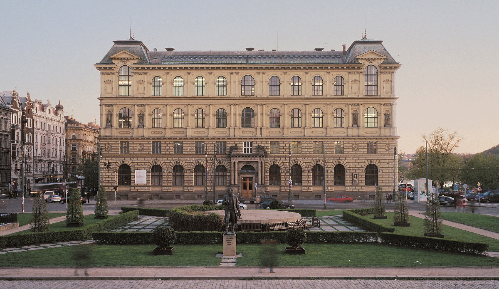
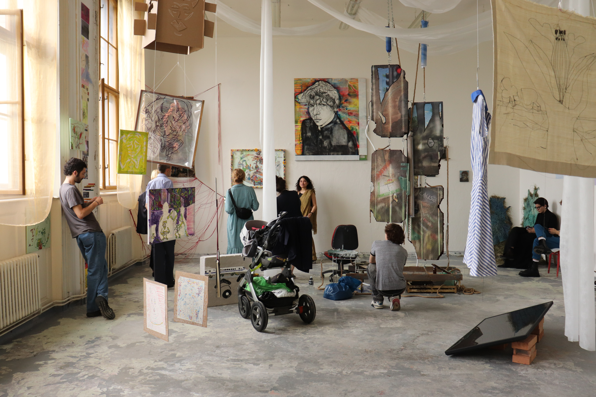
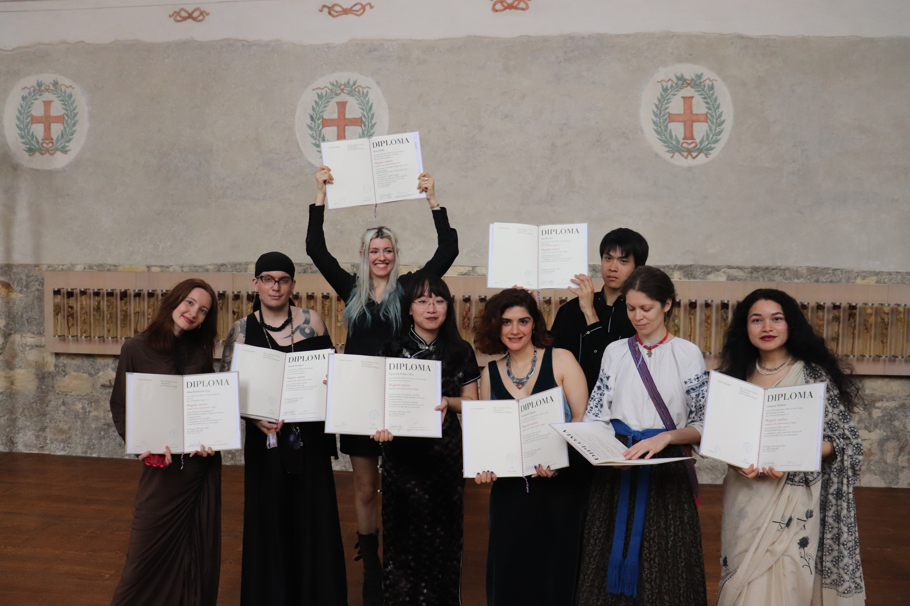

The Academy of Arts, Architecture, and Design in Prague (UMPRUM) was founded in 1885
as the first school of its kind to be established in the Czech lands. Today it is a modern,
dynamic and outward-looking institution that consistently ranks among the most prestigious
art universities in Western and Eastern Europe. Currently, it has three buildings. The
main UMPRUM building is located in the historic centre of Prague and housed in a Neo-
Renaissance building that features traditional atelier-like studios, offering a fantastic view of
the Prague Castle and Prague Lesser Town. Although the school itself is a modern
institution, the building in which it is located needs renovation. It is going to be closed in
January 2026 and the remaining studios that are still in the main UMPRUM building (Fine
Arts I, II, III, IV; Architecture I, II, III, IV; Product Design, Industrial Design and Furniture and
Interior Design; Illustration and Graphics, GDVC, GDNM, Type Design and Typography) will
be moved to a community centre in Kasárna Karlín. It might seem that Karlín district is far
away from the city centre, however, the opposite is true. Karlín is adjacent to Prague 1 and
can be easily reached by bus, tram or metro (see in the box).
Currently, more than half of the UMPRUM studios can be found in the newly built
Technology centre in Mikulandská 5, Prague 1. The building, designed by former Architecture IV heads,
primarily offers UMPRUM students highly modern workshops equipped with above-standard
workshop facilities and space for work. The third building called Kafkárna is a former
sculpture studio from 1930’s in Prague 6 that is now used as a Centre for Arts and Ecology.
It’s where the studio of Visiting Artist will be temporarily located from September 2025.
Though the Visual Arts (VA) program is a relatively recent addition to this legacy (since
2007), the contribution made by VA students has made significant impact both on UMPRUM,
Prague, and the Czech Republic as a whole. With the network of students and professors of
UMPRUM at their disposal, VA students are uniquely positioned to take advantage of all the
city has to offer in and out of their field. All UMPRUM activities and events are updated
regularly also on the UMPRUM facebook, instagram
and YouTube pages.
You can find the main UMPRUM building
in Náměstí Jana Palacha 80, Prague 1. It’s easily accessible by metro
(line A, Staroměstská station), tram (trams No 17, 18, 2, Staroměstská stop),
and bus (207, Staroměstská stop).
The main UMPRUM building will be closed from January 2026 for renovation, and some of the
UMPRUM studios will move to a new location in Kasárna Karlín, Prvního pluku 20/2 in Karlín. The
place can be reached by tram (No. 24, 3, Florenc stop), bus (207, Florenc stop) and metro (red line
C, Florenc station).
In 2021, nearly all the UMPRUM workshops were moved from the main building in Náměstí Jana
Palacha to a newly built UMPRUM Technology Centre in Mikulandská 5, Prague 1. You can get to
Mikulandská 5 in 5 or 10 minutes by tram (No. 18, 2, Národní třída stop) or walk there (for around
10-15 minutes).
Launched in February 2007, Visual Arts is a two-year postgraduate international program in English (three-year program across UMPRUM’s architecture studios) that combines practical studio-based seminars and workshops with theoretical lectures on art theory and history. It is designed for BA/BFA or MA/MFA degree holders from universities and colleges abroad, irrespective of country.
It aims at providing foreign students with sound education in their chosen discipline/studio in order to prepare them for individual and collaborative work in their profession all over the world. Successful Visual Arts students – who after two years of studies (or three years across Architecture studios) pass the final state exam on history of art and defend both a diploma thesis and project – earn an internationally acknowledged academic degree MgA (Magister Artis), which is equivalent to MA (Master of Arts).
Over two/three years of intensive study, VA students both deepen their knowledge in their field of specialization, and expand their horizons at group Visual Arts meetings: each student participates in their specific studio (e.g. Fine Arts I, Glass, Ceramics and Porcelain) where they attend regular consultations, present their end-of-semester projects each semester, and present and defend their diploma projects. They also attend group VA consultations and take part in extra activities (e.g. exhibitions) organized by the VA tutor; emphasis is put on theory and critical reflection of current issues. VA students are offered a unique chance to be taught by respected authorities on modern and contemporary Czech art and visual culture, graphic design, applied arts, design and architecture of the 20th and 21st centuries. At the same time, they are encouraged to take up elective workshops and develop and hone their skills in bookbinding, drawing, painting, clay modelling, photography, jewellery, ceramics, printing and model-making techniques, etc. A key element in the VA mission is the organization and realization of group exhibitions of VA students’ work outside of the confines of UMPRUM. These experiences help students develop their skills in curating, installing, and promoting, and are designed to help them establish contacts in the Czech Republic and beyond.

After a few years of preparatory activities and approval hunting, the Department of Art History and Theory, namely Martina Pachmanová, an art theoretician and former UMPRUM vice-rector, succeeded in gaining the accreditation for the post-graduate follow up program in English, granted by the Czech Ministry of Education, Sport and Youth in 2006. It took Alan Záruba, a former VA tutor and graphic designer, and Hana Smělá, the VA Program Head, another year to promote VA, address prominent teachers and lecturers to join the program, and launch the VA course in summer 2007. At first, there were only 4 out of 23 UMPRUM studios in which VA students could gain their MFA degree in English, however, throughout the course of the VA program, more studios gradually joined VA and now VA students can study and gain their MFA degree in all 24 of UMPRUM studios.
Over the years of VA’s existence, an essential part of the MA curriculum is also group consultations and meetings with the VA tutor. The first VA tutor was Alan Záruba, a prominent graphic designer working for renowned TV broadcasting companies. His meetings for all MA students from various studios were called Interdisciplinary Dialogues and their aim was to offer students time and space to discuss their work produced in their respective studios and become familiar with the Czech visual culture scene.
Since summer term 2008, the VA studio was tutored by Milena Dopitová, a well-established Czech conceptual artist, who followed up on Alan Záruba’s Interdisciplinary Dialogues, and held special Team Project consultations each week. Within these sessions Milena challenged all VA students to work outside of their comfort zone to develop work that was both conceptually strong and visually compelling. In this framework, graphic designers tried their hand at working with sound, or painters took on working with video. These efforts reached fruition in the end-of-semester exhibitions held at the school, in which an emphasis was put on the professional installation of the works. This combination of risk-taking, experimentation, and professionalism is what the VA program aims at, helping students develop into highly dynamic artists and designers who have a broad range of skills to draw on in their future careers. Apart from curating the end-of-semester exhibitions at UMPRUM, Milena also organized other VA group exhibitions in or outside of Prague (Doubice, Munich, Mikulov). In summer semester 2015 Milena Dopitová applied for the position of the head of Intermedia Studio at the Academy of Fine Arts in Prague (AVU), won the fierce competition, and left the VA program.
After the long great period of Milena being the only tutor of the VA program, the concept of VA was amended, so instead of having one VA tutor for many years, from October 2017 to October 2019, VA tutors only stayed with the program for one academic year. They were chosen from amongst Prague-based curators, activists, visual artists, and art theoreticians.
The VA tutor for the academic year 2016/2017 was Václav Janoščík, a prominent Czech curator and art theoretician, also a teacher of philosophy and media theory and contemporary art. He temporarily renamed the former Team Project and called it “VA/Very Anxious meetings”. He offered a radically open format of consultations that followed the needs of diverse group of VA students; he aimed at finding a compromise between practical and theoretical aspects of fine art education. His intention was to focus on art “appreciation”, self-awareness, critical thinking and even political issues with the emphasis on exhibition or project-based practice. He offered a broad variety of topics and forms of education. During the VA meetings, students read theoretical texts on various topics and met many guests. At the end of winter semester (January 2017) Václav also organized and curated an exhibition Draw Me In in GAMU gallery in Prague 1.
In academic year 2017/2018 the position of the VA tutor was held by Jimena Mendoza, who is now a well-established Prague-based Mexican visual artist, a VA graduate from Intermedia studio, and is also one of the two heads of Sculpture studio at the Academy of Fine Arts in Prague. In her VA meetings she focused each week on a different topic, ranging from body art, performance, working in artist groups, collectivism, futuristic ideas and modernism in cinema, visions of new societies, archives and museums, and design questions. Apart from bringing various readings and books to the VA meetings, Jimena guided students through big and small Prague galleries, organized a field trip to Warsaw, Poland, invited guests to meetings, and finally curated the Koruna exhibition in the City Surfer Office Gallery in Prague 3 (April 2018).
The VA tutor in the academic year 2018/2019 was Milan Mikuláštík, a Czech Prague-based visual artist, social and political activist, an influential curator working in the NTK Gallery (and many other smaller institutions), a member of MINA and GUMA GUAR art groups, a former Professor Assistant in Supermedia Studio at UMPRUM, and now on one of the two heads of Painting Studio III at the Academy of Fine Arts. Like his VA predecessors, Milan aimed at making the VA meetings diverse and suitable for all VA students from various fields of interest. He not only gave guided tours of Prague’s remarkable architecture, dived into the political and historical context of the city while walking the streets of Prague, but he also took students to many significant Prague-based museums and galleries. Milan, as his predecessors, also curated a group exhibition of all VA students (34 students) in HYB4 gallery situated in Hybernská street in the centre of Prague (December 2018).
In the academic year 2019/2020 the VA program returned to the same concept of having one VA tutor for a longer period of time. Since September 2019, the position of the VA tutor has been held by Conrad Eric Armstrong. Conrad is an American artist and teacher who has lived and worked in Prague since 2004. Having initially studied painting at the Rhode Island School of Design, Conrad earned his MFA degree from the UMPRUM studio of Intermedia Confrontation in 2010. In his professional teaching life, he has worked with a range of ages and abilities, which included functioning as the VA assistant to Milena Dopitová from 2011 to 2014. His artistic pursuits in painting, drawing, sculpture, and performance involve elements of storytelling, exploration of the possibilities of association, and often aim to engage viewers on a playful and inquisitive level. Conrad frequently collaborates with Viktor Valášek as part of the painting duo CONVICT. He has exhibited widely in the Czech Republic and frequently pursues artistic endeavors in the United States. So far, Conrad has curated seven Visual Arts exhibitions: four in Villa P651 in Prague 6 Střešovice (2019 – 2023), a group VA show called in HYB4 Gallery in Prague 1 (May 2020), a group exhibition in the FaVU gallery in Brno, South Moravia (May 2022) and in Městská Galerie in Týn nad Vltavou, South Bohemia (March 2024), and the latest one in Klub Tukan in Ústí nad Labem (March 25). Together with Hana Smělá, the VA head, and two VA graduates Jimena Mendoza and Saki Matsumoto, he co-curated the VAvoomvoom exhibition in UM gallery, UMPRUM, which was an anniversary exhibition of the 15+ years of the VA master’s degree program at UMPRUM showing the work of more than 27 VA graduates.
There have been 127 Visual Arts students to graduate from UMPRUM, gaining their MA degree during the official final graduation ceremony in the former Church of Saint Anne, Prague 1.
Here is a list of all of them:
Marie Bally (France, Graphic Design and Visual Communication)
Jessica Ledoux (Canada, Type Design and Typography)
Olha Serhiivna Lysa (Ukraine, Photography 2)
Nga Lok Esther Man (Hongkong, Animation and Film)
Ho-Pui Prescott Law (Hongkong, Fine Arts IV)
Liubov Plavska (Ukraine, Ceramics and Porcelain)
Reyhaneh Rajabi (Iran, Fine Arts II)
Lavanya Thakur (India, Fine Arts II)
Daniil Tsvetkov (Russia, Fine Arts II)
Pablo Arenas Restrepo (Colombia, Fine Arts II)
Ana-Maria Baescu (Romania, Photography 2)
Christopher Batuzich (USA, K.O.V.)
Juliana Castano Olivares (Colombia, Fine Arst II)
Hermance Duverney (France, Graphic Design and Visual Communication)
Joanie Kristell Guerrero Mercado (Peru, Fine Arts III)
Ana Luisa Hinojosa Torres (Mexico, Graphic Design and Visual Communication)
Utku Kocak (Turkey, Architecture III)
Mizuki Sukagawa (Japan, Graphic Design and Visual Communication)
Hoi Man Hero Tang (Hongkong, Fine Arts IV)
Ian Young (The United Kingdom, Fine Arts I)
Chen-Ting Wei (Taiwan, Illustration and Graphics)
Magdalena Zalewa (Poland, Fine Arts III)
Tongpu Zhang (China, Graphic Design and Visual Communication)

Ann-Sophie Gehrig (Germany, Fine Arts II)
Kintija Elīna Karaša (Latvia, Type Design and Typography)
Ilya Kreines (Israel, Illustration and Graphics)
Hung Chiao Shih (Taiwan, Architecture III)
Jacob Johannes Dostert (Germany, Architecture III)
Nahuel Gerth (Germany, Graphic Design and Visual Communication)
Magda Anna Chmielowska (Poland, Illustration and Graphics)
Ya Chu Kuo (Taiwan, Intermedia)
Adrian Lesechko (Ukraine, Industrial Design)
Rama Krishna Sai Teja Manda (India, Type Design and Typography)
Elisabetta Luisa Nová (Turkey, Graphic Design and Visual Communication)
Rodrigo José Realista Corriente Rosa (Portugal, Intermedia)
Marta Savignano (Italy, Graphic Design and Visual Communication)
Kina Usami (Japan, Textile Design)
Ema Veljanoska (Macedonia, Photography 1)
Byoung Chan Yun (South Korea, Glass)ß
Maria Dokuchaeva (Russia, Photography)
Luigi Gorlero (Italy, Type Design and Typography)
Abhishek Chaudhary (India, Intermedia)
Chloé Célia Elsa Burkiewicz (France, Paintig)
Helene Krieger (Austria, Type Design and Typography)
Loretta Wai Ting Lau (Hong Kong, Intermedia)
Minami Nishinaga (Japan, Sculpture)
Yui Ozaki (Japan, Intermedia)
Carolina Prom (UK, Intermedia)
Brina Steblovnik (Slovenia, Glass)
Daria Suratova (Russia, Graphic Design and Visual Communication)
Kotone Utsonomiya (Japan, Illustration and Graphics)
Mark D’Urso (USA, Painting)
Begüm Erçam (Turkey, Industrial Design)
Sebastián Segura Espinel (Colombia, K.O.V.)
Anastasia Filatova (Russia, Architecture III)
Kristin Jermstad Gravdal (Norway, Architecture III)
María Andrea Miranda Serna (Colombia, Illustration and Graphics)
Marie Helen Tite (Canada, Photography)
Miyuki Shiotsu (Japan, K.O.V.)
Jonne Väisänen (Finland, Photography)
Lok Kiu Ingrid Wong (Hongkong, Sculpture)
Emel Erdem (Turkey, Glass)
Yu-Lin Huang (Taiwan, Glass)
Yea-Eun Jang (Korea, Film and TV Graphics)
Ksenija Markovič (Montenegro, Furniture and Interior Design)
Ayaka Tajiri (Japan, Intermedia)
Hsin-Yin Tsai (Taiwan, Ceramics and Porcelain).
Jung-Jiea Hung (Taiwan, Photography)
Miloš Djikanovic (Montenegro, Architecture III)
Celeste Hill (USA, Intermedia)
Rebeka Molnár (Hungary, Film and TV Graphics)
Ping Ping Zhao (China, Glass)
Asawari Niteen Bhagwat (India, Interior and Furniture Design)
Piyakorn Chaverapundech (Thailand, Graphic Design and Visual Communication)
Saki Matsumoto (Japan, Illustration and Graphics)
Jimena Mendoza (Mexico, Intermedia)
Urvi Sethna (India, Intermedia)
Alison Freedman (USA, Film and TV Graphics)
Katharina Rohdin (Sweden, Architecture I)
Pal Steinar Gumpen (Norway, Intermedia)
Timo Hirschmann (Germany, Film and TV Graphics)
Yukiko Taima (Japan, Illustration and Graphics)
Tomoko Kumagai (Japan, Supermedia)
Jorge Abraham Garcia Razo (Mexico, Product Design)
Fanny Rocio Acero Reyes (Colombia, Intermedia)
Nelson Fernando Echeverria Ruiz (Ecuador, Fashion and Footwear)
Marko Mikičic (Croatia, Graphic Design and Visual Communication)
Vlada Shamava (Belarus, Graphic Design and Visual Communication)
Qiyuan Zheng (China, Interior and Furniture Design)
Thorarinn Jonsson (Iceland, Sculpture)
Jana Ivanovska (Macedonia, Textile Design)
Nurten Erdogan (Turkey, Intermedia)
Anej Nuhanovic (Bosnia/ USA, Sculpture)
Akane Hayakawa (Japan, Illustration)
Aysegul Cakiroglu (Turkey, Product Design)
Grant Conboy (USA, Painting); Akira Otsubo (Japan, Photography)
Roberto Lucio Fuentes Rangel (Mexico, Painting)
Qing Mei Xing (China, Typography)
Zhichao Zhu (China, Film and TV Design)
Hwan Bang (Korea, Film and TV Graphics)
Himanshu Choudhary (India, Photography)
Takeshi Ito (Japan, Glass)
Giselle Olguín Jiménez (Mexico, Painting)
Noa Nahari (Israel, Supermedia)
Li Xu (China, Graphic Design and Visual Communication)
Qin Zou (China, Graphic Design and Visual Communication)
Luis Guillermo Cerdas (Costa Rica, Studio of Film and TV Graphics)
Mark Hale (Turkey, Film and TV Graphics)
Luying Huang (China, Glass)
Wiley Jackson (USA, Glass)
David Yule (Australia, Glass)
Conrad Armstrong (USA, Intermedia Art)
Kaori Fujita (Japan, Film and TV Graphics)
Ine Harrang (Norway, Glass)
Marta Mancusi (Italy, Illustration)
Yumiko Ono (Japan, Intermedia)
Sadie Renwick (Scotland, Intermedia)
Karim Talaat (Canada, Intermedia)
Carolyn Agis (USA, Film and TV Graphics)
Christian Bulmahn (Germany, Graphic Design and Visual Communication)
Çigdem Çevrim (Turkey, Typography)
Matěj Hlaváček (Czech Republic, Typography)
Atsushi Makino (Japan, Film and TV Graphics)
Kateřina Šachová (Czech Republic, Illustration and Graphics)
Winnie Tan (Singapore, Typography)